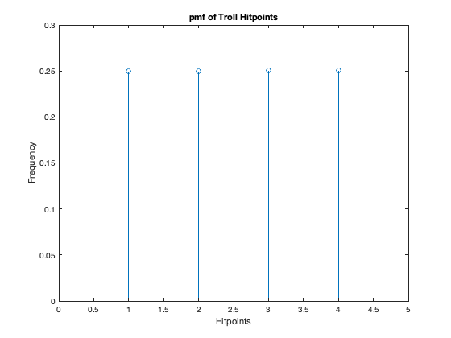

Contents
- Husam Almanakly
- 1a - Probability of rolling 3, 6 sided die and getting a sum score of 18
- 1b - Prob of generating 3 scores, keeping highest, scoring 18
- 1c - Probability of generating all 18s using Fun Method
- 1d - Probability of using Fun Method and getting all 9s
- 2a - Average number of Troll Hitpoints
- 2b - pmf for amount of damage fireball does, and amount of hitpoints trolls have
- 2c - 6 trolls, 1 Fireball
- 2d - Kills all but 1
- 2e - 2 weapons, 2d6 and 1d4
- Functions
Husam Almanakly
ECE302 Project 1 - Dungeons and Dragons
% This project simulates questions based on the famous board game Dungeons % and Dragons. Given a scenario in the game, this script provides both % figures and simple estimated probabilities with a large enough number % of trials to assume convergence. clear clc close all
1a - Probability of rolling 3, 6 sided die and getting a sum score of 18
Each die must roll a 6
% Only one possible combination prob = 1 / (6 ^ 3); % Simulation n = 1000000; rolls = roll(6, 3, n); max_ability = length(rolls(rolls == 18)); est_prob = max_ability / n; disp("True Probability of rolling a score of 18: " + prob) disp("Estimated Probability of rolling a score of 18 (N = " + n + "): " + est_prob)
1b - Prob of generating 3 scores, keeping highest, scoring 18
% Generate scores using Fun Method max_three = fun_method(6, 3, n); max_three_count = sum(max_three == 18); est_prob_three = max_three_count / n; % True Prob = 3 * prob of rolling 18 disp("True Probability: " + prob * 3) disp("Estimated Probability of rolling three times and getting 18: " + est_prob_three)
True Probability: 0.013889 Estimated Probability of rolling three times and getting 18: 0.013824
1c - Probability of generating all 18s using Fun Method
% 6 Abilities, 6 Fun Method Rolls abilities = [fun_method(6, 3, n); fun_method(6, 3, n); fun_method(6, 3, n); fun_method(6, 3, n); fun_method(6, 3, n); fun_method(6, 3, n)]; % Count number of times all abilities are 18 perfect_occurences = sum(sum(abilities) == (18 * 6)); estimated_prob = perfect_occurences / n; disp("Estimated Probability of a perfect character: " + estimated_prob)
Estimated Probability of a perfect character: 0
1d - Probability of using Fun Method and getting all 9s
% Count number of average occurences tmp = sum(abilities == 9) == 6; average_occurences = sum(tmp); estimated_avg_prob = average_occurences / n; disp("Estimated Probability of an average character: " + estimated_avg_prob)
Estimated Probability of an average character: 0
2a - Average number of Troll Hitpoints
% 1d4 => Average hit points = 2.5 % Fireball - 2d2 => Average damage = 3 % Generate Trolls, find average hitpoints trolls = randi(4, 1, n); avg_troll = mean(trolls); % Average fireball damage fireball = roll(2, 2, n); fire_ball_avg = mean(fireball); % Prob Fireball does > 3 points of damage bound = sum(fireball > 3); prob_bound = bound / n; disp("Average number of hit points of a troll: " + avg_troll) disp("Average damage of a fireball: " + fire_ball_avg) disp("Probability that Fireball does > 3 points of damage: " + prob_bound)
Average number of hit points of a troll: 2.5015 Average damage of a fireball: 3.0004 Probability that Fireball does > 3 points of damage: 0.25038
2b - pmf for amount of damage fireball does, and amount of hitpoints trolls have
% Troll hitpoints pmf troll_pmf = histcounts(trolls,[unique(trolls) Inf],'Normalization','probability'); % FIREBALL pmf pmf = histcounts(fireball,[unique(fireball) Inf],'Normalization','probability'); figure stem(pmf) title("pmf of FIREBALL") xlabel("Damage points") ylabel("Frequency") xticks([1 2 3]) xticklabels([2 3 4]) xlim([0 4]) % Troll hitpoint pmf figure stem(troll_pmf) title("pmf of Troll Hitpoints") xlabel("Hitpoints") ylabel("Frequency") xlim([0 5])
2c - 6 trolls, 1 Fireball
% Generate health points for 6 trolls (1d4 roll each troll, 6 trolls) group_trolls = randi(4, 6, n); dead_trolls = group_trolls <= fireball; % Count number of times all trolls were killed all_dead = sum(sum(dead_trolls) == 6); est_all_prob = all_dead / n; disp("Probability all trolls die from a Fireball: " + est_all_prob)
Probability all trolls die from a Fireball: 0.34348
2d - Kills all but 1
% Find all times only one troll survived all_but_one = sum(dead_trolls) == 5; tmp = group_trolls(:, all_but_one) - fireball(all_but_one); % Keep only positive health values (ie lone surviving troll) remaining_health = transpose(tmp(tmp > 0)); % Plot histogram of remaining Troll Healths health_hist = histcounts(remaining_health,[unique(remaining_health) Inf],'Normalization','probability'); figure stem(health_hist) title("Surviving Troll Health") xlabel("Health") ylabel("Frequency") xlim([0 3]) avg_health = mean(remaining_health); disp("Average remaining health: " + avg_health)
Average remaining health: 1.0578
2e - 2 weapons, 2d6 and 1d4
% Simulate rolling the 20 sided dice first to see if you can attack first_attack = randi(20, 1, n); num_attacks = sum(first_attack >= 11); % Generate the attacks using the proper number determined from the 20 sided % dice sword = roll(6, 2, num_attacks); % Attack with the hammer, first rolling the 20 sided dice second_attack = randi(20, 1, num_attacks); num_second = sum(second_attack >= 11); hammer = randi(4, 1, num_second); % Add additional damage for second attack (if applicable) t = second_attack >= 11; sword(t) = sword(t) + hammer; % Plot histogram of damage done damage = histcounts(sword,[unique(sword) Inf],'Normalization','probability'); figure stem(damage) title("Total Damage Done") xlabel("Damage") ylabel("Frequency") % xticks() % xticklabels(unique(sword)) avg_damage = mean(damage); disp("Average damage done to Keene: " + avg_damage)
Functions
% Function to roll a dice and get total score function v = roll(num_sides, num_dice, num_trials) v = sum(randi(num_sides, num_dice, num_trials)); end % Function to roll a dice using the 'Fun Method' function v = fun_method(num_sides, num_dice, num_trials) roll1 = roll(num_sides, num_dice, num_trials); roll2 = roll(num_sides, num_dice, num_trials); roll3 = roll(num_sides, num_dice, num_trials); v = [roll1; roll2; roll3]; v = max(v); end
True Probability of rolling a score of 18: 0.0046296 Estimated Probability of rolling a score of 18 (N = 1000000): 0.004689